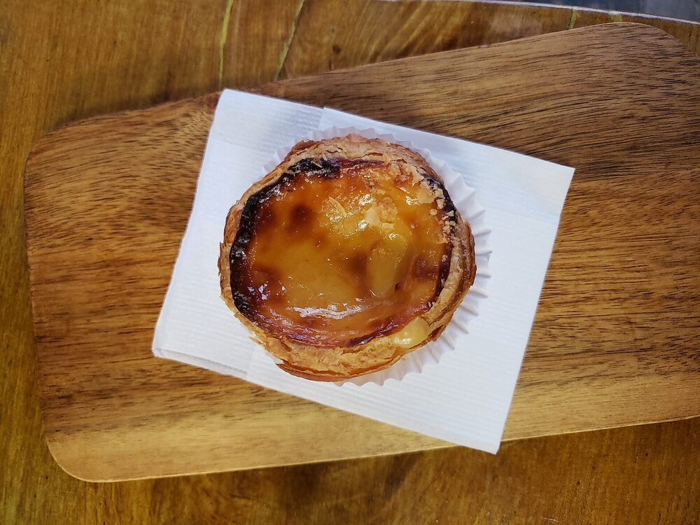
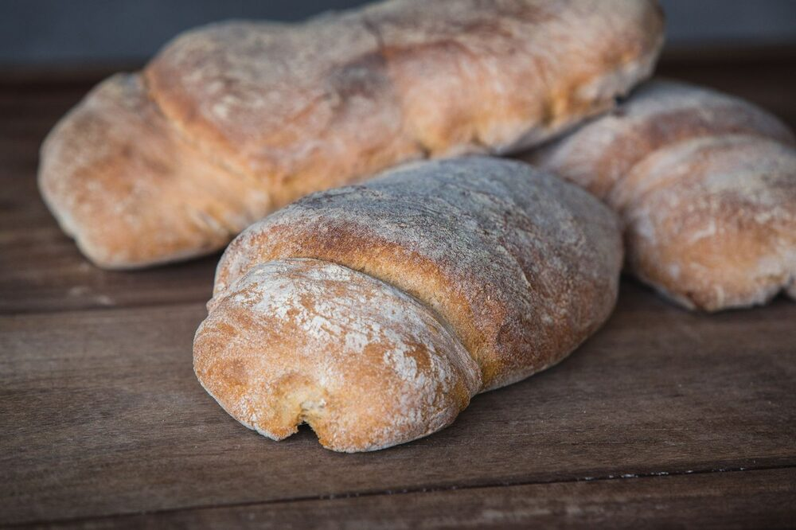
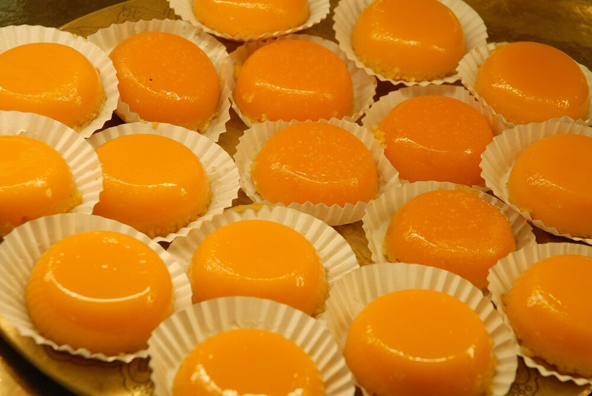

Bifana
The Portuguese hot pork sandwich, marinated and served in a soft roll — the house signature, and the reason people come back.
Bakery · Café · Geneva · since 1999
A family-run Portuguese bakery-café in the heart of the Jonction. Bifanas, pastéis de nata, fresh bread and coffee — to enjoy in or take away.
Pastéis de nata
The menu
Portuguese specialties, house bakery and pastries, coffee from morning to early afternoon.
About
Chez Martins is a small, family-run Portuguese neighbourhood bakery-café, on Rue des Deux-Ponts since the late 1990s.
People come for the bifanas, the pastéis de nata, the fresh bread and the coffee — and for the warm welcome of a family that greets its regulars with a smile. Unpretentious, a stone's throw from the Queue-d'Arve.
An everyday address built for takeaway: a coffee and a pastry in the morning, a sandwich or a bifana at noon.



Contact
A question, a special order, a kind word? Give us a call, or leave a message below.
Reviews
The bifanas are TOP.
Warm welcome, friendly atmosphere, delicious bifanas and very well located!
Always a pleasure to come back. Always warmly received, with the smile and kindness of this lovely family.
Find us
On Rue des Deux-Ponts, in the Jonction / Queue-d'Arve district of Geneva.
| Monday | Closed |
|---|---|
| Tuesday | 06:00 – 16:00 |
| Wednesday | 06:00 – 16:00 |
| Thursday | 06:00 – 16:00 |
| Friday | 06:00 – 16:00 |
| Saturday | 07:00 – 16:00 |
| Sunday | 08:00 – 16:00 |
Tuesday-to-Thursday hours may vary — a quick phone call before you come is safest.
FAQ
The bifana — a Portuguese hot pork sandwich. We're also known for our pastéis de nata, fresh bread and coffee.
Yes. Most of our customers take their order to go: it's a neighbourhood spot built for takeaway, though you can also grab a coffee at the counter.
Yes — we're a bakery: bread, viennoiseries and pastries are made on site on opening days. We're closed on Mondays.
Tuesday to Sunday; closed on Monday. Detailed hours are in the Find us section.